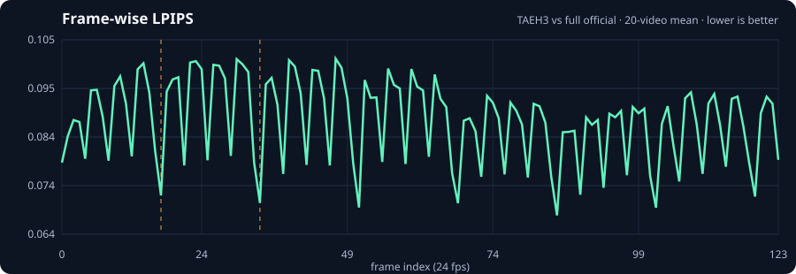
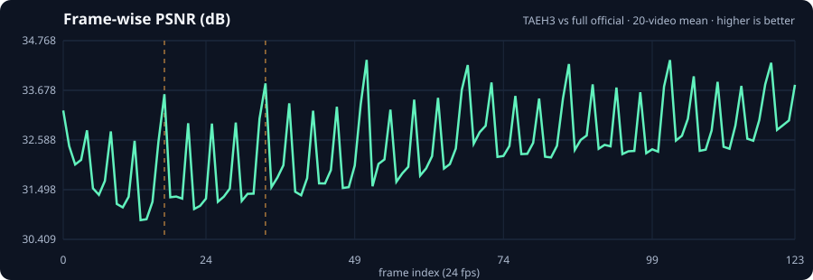
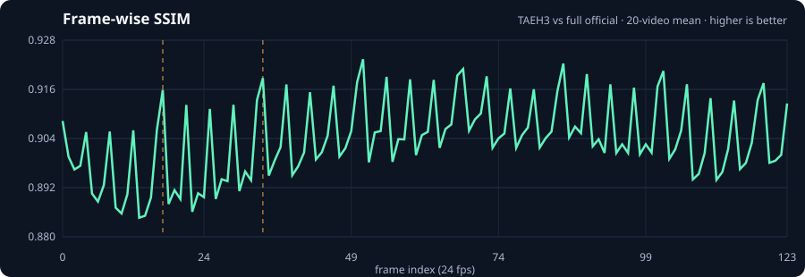
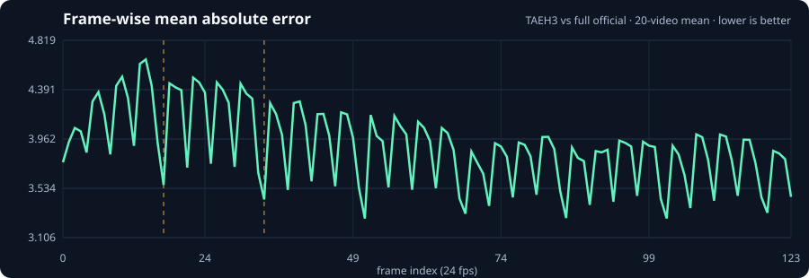
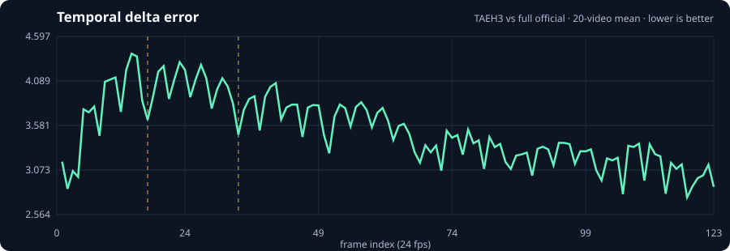
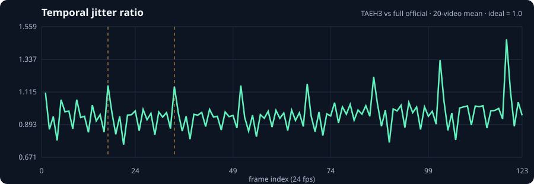

Pure TAEH3
12.39% lower E2E, but the largest content-dependent texture and temporal differences.
TAEH3 reconstructs the complete video in about 0.06 seconds. Sparse chunks from the official H3 VAE trade some of that speed for steadily higher same-latent fidelity—without touching denoising, cache decisions, motion trajectory, or the audio decoder.
The order-1 cascading cache produces exactly the same final video and audio latents in every arm. Only RGB reconstruction changes. This makes decoder fidelity metrics substantially easier to interpret than progressive-resolution metrics: all arms begin from the identical generated latent.
Means ± sample standard deviation across 20 prompt/seed pairs. Candidate E2E is composed from each reference request as reference E2E − official decoder + candidate decoder, isolating decoder cost from observed denoise-only timing tails.
| arm | composed E2E | speedup | reduction | decoder | SSIM | PSNR | LPIPS | sharpness |
|---|---|---|---|---|---|---|---|---|
| TAEH30 / 7 official chunks | 28.95 ± 2.25 s | 1.142 ± 0.012× | 12.39 ± 0.94% | 0.056 ± 0.021 s | 0.9038 ± 0.0322 | 32.11 ± 2.48 dB | 0.0879 ± 0.0335 | 0.8939 ± 0.0523 |
| TAEH3 + 1/7 official1 / 7 official chunks | 29.59 ± 2.26 s | 1.117 ± 0.011× | 10.47 ± 0.86% | 0.688 ± 0.015 s | 0.9111 ± 0.0299 | 32.59 ± 2.54 dB | 0.0799 ± 0.0305 | 0.9048 ± 0.0456 |
| TAEH3 + 2/7 official2 / 7 official chunks | 30.17 ± 2.25 s | 1.095 ± 0.009× | 8.70 ± 0.74% | 1.269 ± 0.028 s | 0.9193 ± 0.0269 | 33.24 ± 2.40 dB | 0.0723 ± 0.0275 | 0.9174 ± 0.0394 |
| TAEH3 + 4/7 official4 / 7 official chunks | 31.31 ± 2.26 s | 1.055 ± 0.006× | 5.22 ± 0.56% | 2.413 ± 0.013 s | 0.9338 ± 0.0216 | 34.47 ± 2.33 dB | 0.0581 ± 0.0208 | 0.9399 ± 0.0288 |
Reference: cache-only + official H3 VAE, 33.03 ± 2.24 s E2E and 4.129 ± 0.117 s decode. Higher SSIM/PSNR is closer; lower LPIPS is closer; sharpness has an ideal value of 1.0.
12.39% lower E2E, but the largest content-dependent texture and temporal differences.
8.70% lower E2E. SSIM 0.9193, PSNR 33.24 dB, LPIPS 0.0723.
5.22% lower E2E and closest reconstruction, but only narrowly clears the 5% gate.
The first kill test understated reconstruction loss. Pure TAEH3 scores SSIM 0.943 on red ball but 0.862 on ocean. Ocean also exposes the strongest smoothing and temporal-difference shift. That is why the full report uses five deliberately different prompts.
Each panel is a synchronized web preview: three arms on the top row, two centered below. The audio track is the official reference audio because every candidate leaves the audio decoder unchanged. Metrics were computed on the original 1344×768 files, not these resized presentation videos.
A red ball rolling slowly across a wooden table.
| arm | E2E speedup | SSIM | PSNR | LPIPS | sharpness | jitter |
|---|---|---|---|---|---|---|
| TAEH3 | 1.139 ± 0.002× | 0.9433 ± 0.0100 | 36.09 ± 0.80 dB | 0.0518 ± 0.0121 | 0.9710 ± 0.0037 | 0.9782 ± 0.0229 |
| TAEH3 + 1/7 official | 1.115 ± 0.001× | 0.9474 ± 0.0094 | 36.66 ± 0.74 dB | 0.0477 ± 0.0113 | 0.9723 ± 0.0036 | 0.9828 ± 0.0228 |
| TAEH3 + 2/7 official | 1.094 ± 0.001× | 0.9518 ± 0.0082 | 37.15 ± 0.70 dB | 0.0443 ± 0.0102 | 0.9761 ± 0.0056 | 0.9867 ± 0.0154 |
| TAEH3 + 4/7 official | 1.053 ± 0.001× | 0.9586 ± 0.0062 | 38.24 ± 0.68 dB | 0.0382 ± 0.0089 | 0.9821 ± 0.0042 | 0.9932 ± 0.0123 |
A woman in a red raincoat says, “The last train leaves at nine,” under a neon awning.
| arm | E2E speedup | SSIM | PSNR | LPIPS | sharpness | jitter |
|---|---|---|---|---|---|---|
| TAEH3 | 1.152 ± 0.010× | 0.9089 ± 0.0193 | 31.51 ± 2.10 dB | 0.0799 ± 0.0204 | 0.9137 ± 0.0208 | 1.0542 ± 0.2385 |
| TAEH3 + 1/7 official | 1.127 ± 0.010× | 0.9155 ± 0.0181 | 31.92 ± 2.22 dB | 0.0721 ± 0.0182 | 0.9199 ± 0.0184 | 1.0642 ± 0.2387 |
| TAEH3 + 2/7 official | 1.105 ± 0.008× | 0.9256 ± 0.0128 | 32.98 ± 1.70 dB | 0.0632 ± 0.0153 | 0.9329 ± 0.0163 | 1.0902 ± 0.2541 |
| TAEH3 + 4/7 official | 1.062 ± 0.007× | 0.9371 ± 0.0110 | 33.98 ± 1.99 dB | 0.0513 ± 0.0133 | 0.9493 ± 0.0100 | 1.1030 ± 0.2502 |
A drummer performs a steady four-beat rhythm, with visible strikes matching crisp hits.
| arm | E2E speedup | SSIM | PSNR | LPIPS | sharpness | jitter |
|---|---|---|---|---|---|---|
| TAEH3 | 1.133 ± 0.006× | 0.9113 ± 0.0180 | 31.40 ± 0.96 dB | 0.0629 ± 0.0027 | 0.8699 ± 0.0192 | 0.9478 ± 0.0610 |
| TAEH3 + 1/7 official | 1.110 ± 0.005× | 0.9187 ± 0.0162 | 31.90 ± 0.97 dB | 0.0568 ± 0.0025 | 0.8853 ± 0.0162 | 0.9639 ± 0.0590 |
| TAEH3 + 2/7 official | 1.089 ± 0.004× | 0.9257 ± 0.0147 | 32.49 ± 0.96 dB | 0.0515 ± 0.0022 | 0.9007 ± 0.0141 | 0.9718 ± 0.0559 |
| TAEH3 + 4/7 official | 1.051 ± 0.002× | 0.9403 ± 0.0110 | 33.91 ± 0.92 dB | 0.0410 ± 0.0019 | 0.9265 ± 0.0121 | 0.9906 ± 0.0487 |
Ocean waves crash against black volcanic cliffs at sunset as the camera slowly pans left.
| arm | E2E speedup | SSIM | PSNR | LPIPS | sharpness | jitter |
|---|---|---|---|---|---|---|
| TAEH3 | 1.156 ± 0.003× | 0.8616 ± 0.0255 | 31.39 ± 1.64 dB | 0.1225 ± 0.0196 | 0.8249 ± 0.0202 | 0.7987 ± 0.0444 |
| TAEH3 + 1/7 official | 1.129 ± 0.003× | 0.8723 ± 0.0234 | 31.82 ± 1.65 dB | 0.1112 ± 0.0176 | 0.8452 ± 0.0180 | 0.8300 ± 0.0422 |
| TAEH3 + 2/7 official | 1.104 ± 0.004× | 0.8816 ± 0.0212 | 32.26 ± 1.62 dB | 0.1008 ± 0.0156 | 0.8665 ± 0.0170 | 0.8627 ± 0.0430 |
| TAEH3 + 4/7 official | 1.060 ± 0.002× | 0.9017 ± 0.0167 | 33.35 ± 1.59 dB | 0.0813 ± 0.0121 | 0.9014 ± 0.0139 | 0.9183 ± 0.0402 |
Two sword fighters duel on a misty mountain bridge with rapid motion and dramatic music.
| arm | E2E speedup | SSIM | PSNR | LPIPS | sharpness | jitter |
|---|---|---|---|---|---|---|
| TAEH3 | 1.127 ± 0.001× | 0.8939 ± 0.0206 | 30.17 ± 1.55 dB | 0.1225 ± 0.0177 | 0.8899 ± 0.0221 | 0.9523 ± 0.0321 |
| TAEH3 + 1/7 official | 1.105 ± 0.000× | 0.9015 ± 0.0206 | 30.66 ± 1.63 dB | 0.1116 ± 0.0169 | 0.9015 ± 0.0242 | 0.9606 ± 0.0279 |
| TAEH3 + 2/7 official | 1.086 ± 0.000× | 0.9119 ± 0.0146 | 31.31 ± 1.45 dB | 0.1017 ± 0.0152 | 0.9107 ± 0.0162 | 0.9637 ± 0.0273 |
| TAEH3 + 4/7 official | 1.048 ± 0.001× | 0.9316 ± 0.0106 | 32.86 ± 1.38 dB | 0.0789 ± 0.0070 | 0.9400 ± 0.0096 | 0.9742 ± 0.0140 |
Across 20 cases, integrated loudness deltas round to 0.00 dB, clipping remains zero, and waveform correlation is approximately 0.9999. Small nonzero differences arise from separately executed requests rather than a candidate audio branch.
H1: reconstruction artifacts are temporally non-uniform and disproportionately concentrated near the beginning. We added 60 runs: Front-1, Front-2, and Front+Late over the same five prompts and four seeds. Official-chunk count is exactly matched to the existing fixed controls.
| temporal region | MAE ↓ | PSNR ↑ | SSIM ↑ | LPIPS ↓ | temporal Δ ↓ | jitter ratio |
|---|---|---|---|---|---|---|
| 0-20%frames 0–24 | 4.1958 | 31.83 dB | 0.8953 | 0.0900 | 3.8435 | 0.9466 |
| 20-40%frames 25–49 | 4.0508 | 32.05 dB | 0.9026 | 0.0919 | 3.8651 | 0.9384 |
| 40-60%frames 50–74 | 3.8017 | 32.64 dB | 0.9093 | 0.0878 | 3.5283 | 0.9421 |
| 60-80%frames 75–99 | 3.7578 | 32.76 dB | 0.9074 | 0.0845 | 3.2895 | 0.9777 |
| 80-100%frames 100–123 | 3.7148 | 33.10 dB | 0.9045 | 0.0853 | 3.1008 | 1.0054 |






Fixed 1/7 = chunk 3; Front-1 = chunk 0. Fixed 2/7 = chunks 1+5; Front-2 = 0+1; Front+Late = 0+5. All use the same two-frame feather.
| method | decoder | composed E2E | reduction | SSIM | PSNR | LPIPS | jitter | temporal Δ |
|---|---|---|---|---|---|---|---|---|
| TAEH30 / 7 official | 0.056 s | 28.95 s | 12.39% | 0.9038 | 32.11 dB | 0.0879 | 0.9462 | 3.5263 |
| Fixed 1/71 / 7 official | 0.688 s | 29.59 s | 10.47% | 0.9111 | 32.59 dB | 0.0799 | 0.9603 | 3.3232 |
| Front-11 / 7 official | 0.683 s | 29.58 s | 10.48% | 0.9125 | 32.70 dB | 0.0798 | 0.9575 | 3.3234 |
| Fixed 2/72 / 7 official | 1.269 s | 30.17 s | 8.70% | 0.9193 | 33.24 dB | 0.0723 | 0.9750 | 3.1198 |
| Front-22 / 7 official | 1.280 s | 30.18 s | 8.67% | 0.9208 | 33.41 dB | 0.0718 | 0.9708 | 3.0842 |
| Front+Late2 / 7 official | 1.263 s | 30.16 s | 8.72% | 0.9196 | 33.20 dB | 0.0728 | 0.9710 | 3.1608 |
| comparison | Δ SSIM · wins | Δ PSNR · wins | Δ LPIPS · wins | Δ temporal error · wins |
|---|---|---|---|---|
| Front-1 − Fixed 1/7 | +0.0015 · 14/20 | +0.11 dB · 13/20 | -0.0001 · 8/20 | +0.0002 · 8/20 |
| Front-2 − Fixed 2/7 | +0.0015 · 12/20 | +0.17 dB · 11/20 | -0.0005 · 12/20 | -0.0356 · 13/20 |
| Front+Late − Fixed 2/7 | +0.0003 · 14/20 | -0.04 dB · 13/20 | +0.0005 · 7/20 | +0.0410 · 5/20 |
The two-frame feather avoids a catastrophic cut. Mean brightness and color jump errors stay below one 8-bit level. Error rises gradually from the official tail through the feather to pure TAEH3, so human review should focus on returning shimmer and texture rather than a gross color flash.
4/8/16-frame prefixes were not forced: the official H3 VAE uses temporal chunks with overlap/state assumptions. One complete 17-frame chunk is the smallest valid deterministic unit here.
Official, TAEH3, Fixed-1, Front-1, Fixed-2, Front-2, Front+Late. Metrics use original 1344×768 files; these resized composites are for transition and early-shimmer review.
Hedra already optimized the official decoder: PR #5 shipped flash SDPA, PR #12 added opt-in GroupNorm+SiLU fusion, and PR #25 targets encoder tiling while noting decoder fragmentation. The distinct contribution here is an optional lossy TAEH3 decoder cascade with sparse official temporal correction.